ZZ GEO / PRODUCT GUIDE
从第一个客户，
到一份可复核的交付。
按真实工作流程了解监测、证据、整改和报告。
每一步都说明操作前提、完成结果和需要留意的边界。
截图来自当前系统，客户身份与业务内容已脱敏。空状态表示当时没有对应数据，不是功能缺失。页面和操作随账号权限变化。
开始使用
先准备供应商配置，再建立客户与问题范围。自行部署与申请官方体验是两种不同的使用方式。
操作步骤
- 自行部署：按仓库 README 准备 Node.js 24、Corepack 和 pnpm 11，安装依赖并设置独立数据目录。
- 申请体验：邮件联系 honest.tai@outlook.com，说明团队和用途。管理员私下提供账号与登录方式，官网不公开体验入口。
- 登录后查看自己可访问的客户。缺少页面或按钮时联系管理员核对权限，不要使用其他人的账号。
进入客户目录，确认需要处理的客户与当前机构。
注意：开源软件可以依 AGPL-3.0 商用。服务器、存储、模型调用以及另购技术服务可能产生费用。
客户管理与建档
客户是监测范围、证据、文章与报告的归属单位。建档时要把品牌身份和问题边界说明白。
操作步骤
- 在客户管理中搜索已有客户，避免重复建档；新客户使用“新建客户”填写名称、目标地区、语言等资料。
- 官网为选填。有官网时填写真实地址，用于抓取与审计；没有官网时相关检查不适用。
- 进入客户后整理品牌别名、竞品和监测问题。研究生成的候选需要人工核对和确认，竞品联网核实只是辅助信息。
- 需要调整资料时使用客户编辑入口。封档后只读；删除是逻辑删除并需确认，不是清除证据。
客户具有人工确认的监测范围，可以准备首次基线。
注意：修改当前资料不会改写历史批次。问题或平台配置变化应建立新基线。
模型与联网平台
监测平台、语义解析与 Agent 的配置决定真实调用能否执行。密钥由有权限的管理员维护。
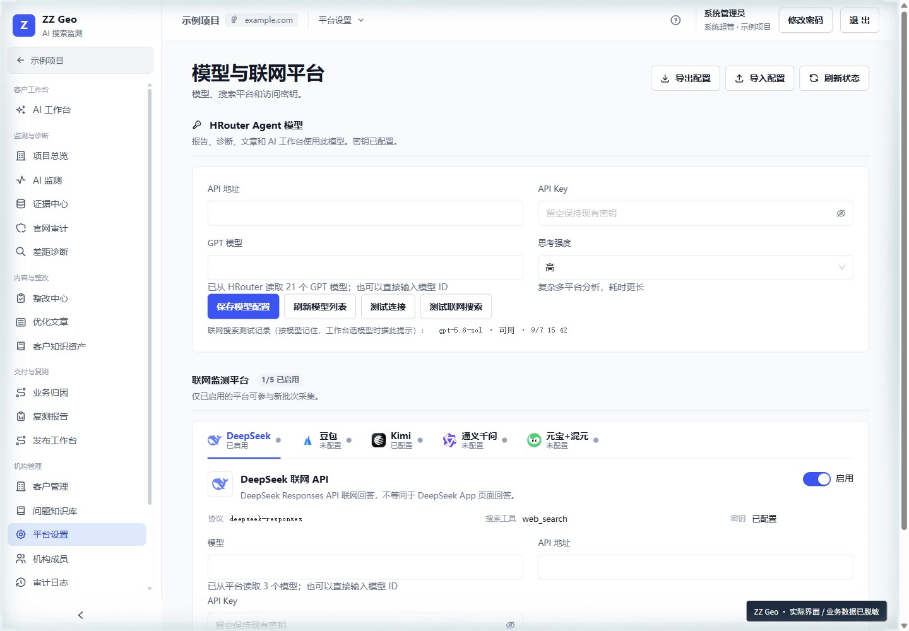
操作步骤
- 在平台设置中选择需要启用的供应商，填写其实际端点、密钥和模型。
- 配置 HRouter 模型，用于项目中的语义处理和 Agent 工作。模型列表与联网能力以实际测试结果为准。
- 按需要执行连接或联网测试；确认额度、权限和支持的协议后再运行采集。
- 迁移环境可导出不含密钥的配置，导入后人工核对并单独补齐密钥。
需要的渠道配置完整，并有可解释的连接或测试状态。
注意：测试和采集可能产生费用。某个平台失败不会自动用其他平台或合成回答补齐。
AI 工作台
通过会话组织问题研究、监测和报告任务。页面保留工具执行记录与进度，便于跟进和核对。
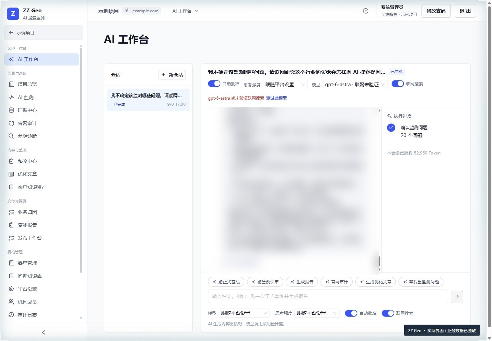
操作步骤
- 确认顶栏当前客户，再进入 AI 工作台选择或新建会话。
- 根据需要选择模型、思考强度和联网搜索设置，描述这次要完成的工作。
- 系统提出问题或竞品候选时，逐项核对、勾选和编辑，再确认范围。
- 查看右侧进度、工具记录和证据入口。需要审批的结构化草稿由成员审核后进入正式记录。
会话中的任务和产生的证据能够定位到当前项目。
注意：自动推进不意味着跳过所有人工确认。联网不可用、额度不足或资料不足时，应按实际状态处理。
项目总览
总览集中展示客户资料、当前监测表现和内容运营待办。先判断是否已有可用批次，再解释数字。
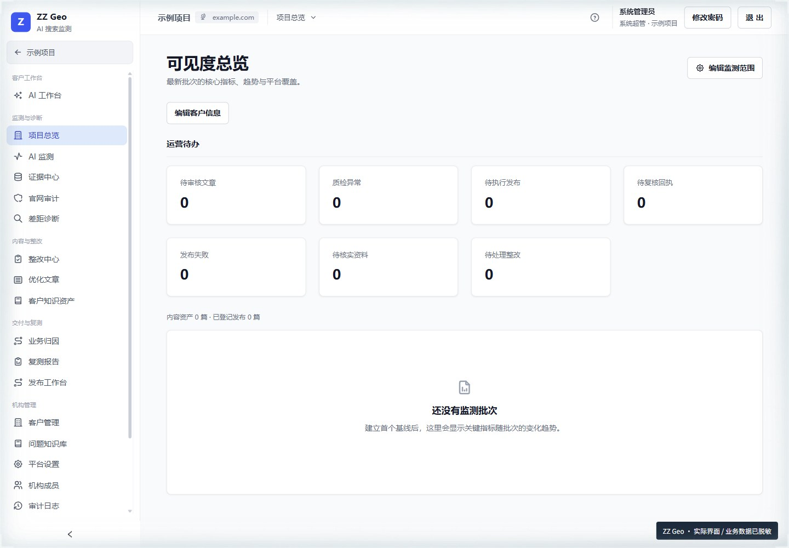
操作步骤
- 核对客户身份和官网信息，需要时编辑当前资料或监测范围。
- 有可用批次时查看指标解释和趋势；没有批次时先建立基线。
- 从待审核文章、质检异常、发布回执和整改待办进入对应页面。
明确当前项目处于建档、采集、整改还是交付阶段。
注意：没有数据不等于表现为零；不同配置的批次不能直接混成一条正式趋势。
AI 监测与正式基线
围绕已确认的问题执行供应商联网 API 采样。快审用于初步了解，正式基线用于后续同配置比较。
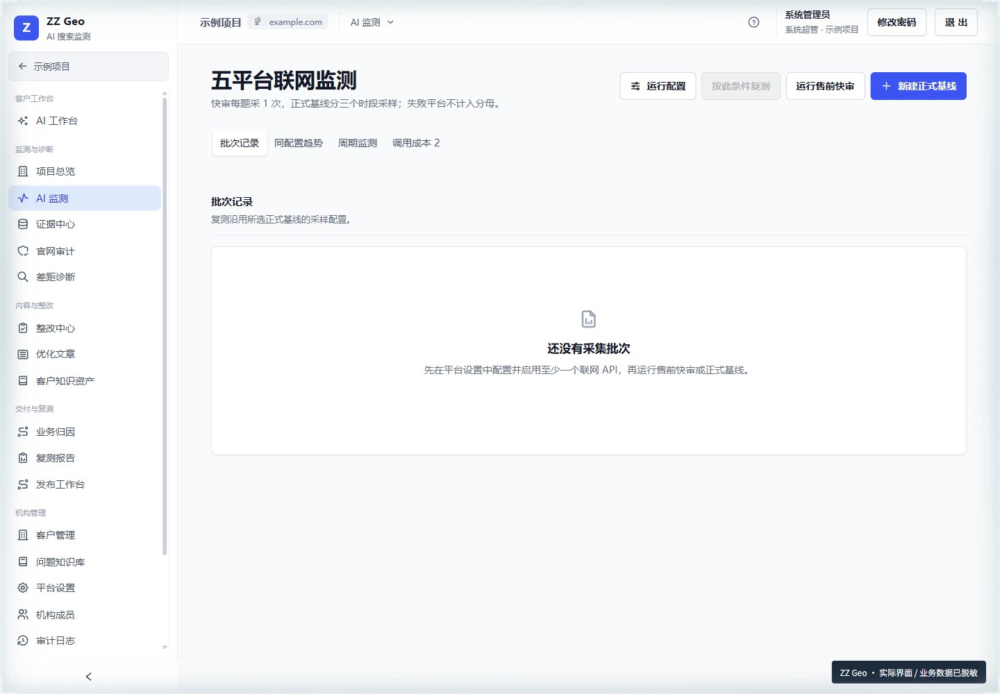
操作步骤
- 打开运行配置，核对平台、问题范围、重复次数和采样时间设置。
- 根据目的选择售前快审或新建正式基线，开始前确认调用预算。
- 在批次记录中跟进采集、解析、问题覆盖及失败状态；等待下个采样窗口时不要重复创建相同任务。
- 整改后选定正式基线，使用“按此条件复测”复用完整冻结配置。
- 趋势、周期监测和调用成本分别查看，不把未知费用当作零。
得到带冻结配置和真实采集状态的批次。
注意：数据来自 API，不等同于消费端 App 回答；元宝渠道是“元宝搜索源 + 混元合成”。
证据中心
先看原文再解释结论。回答证据与 Agent 联网搜索证据分别保存，各自说明来源和用途。
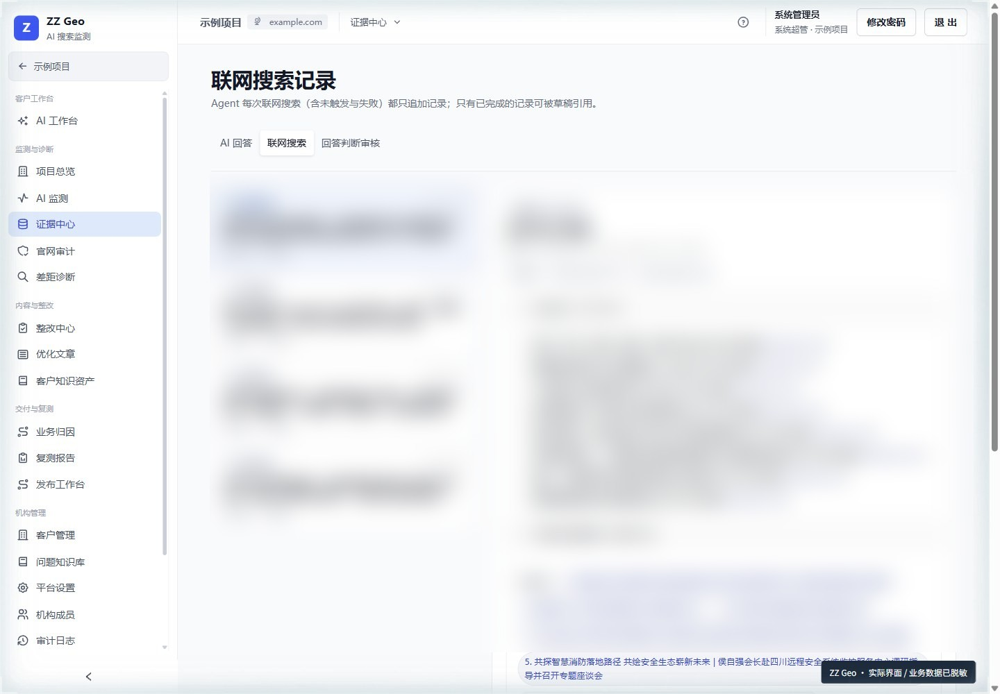
操作步骤
- 选择批次与证据分区，按平台或问题定位记录。
- 打开回答详情，核对原文、采集时间、来源与解析结果。
- 区分搜索返回的来源和最终回答明确引用的链接，不能把两者混算。
- 需要辅助解读时按权限创建分析运行；辅助情感或理由不会改写正式排名指标。
每条结论能够回到对应回答或独立联网搜索记录。
注意：来源不可观察应记录为未知，而不是“没有引用”。重新解析生成派生结果，不覆盖原始采集证据。
官网审计
检查官网可抓取性、页面结构与内容声明，并保留源文件、截图和审计报告。
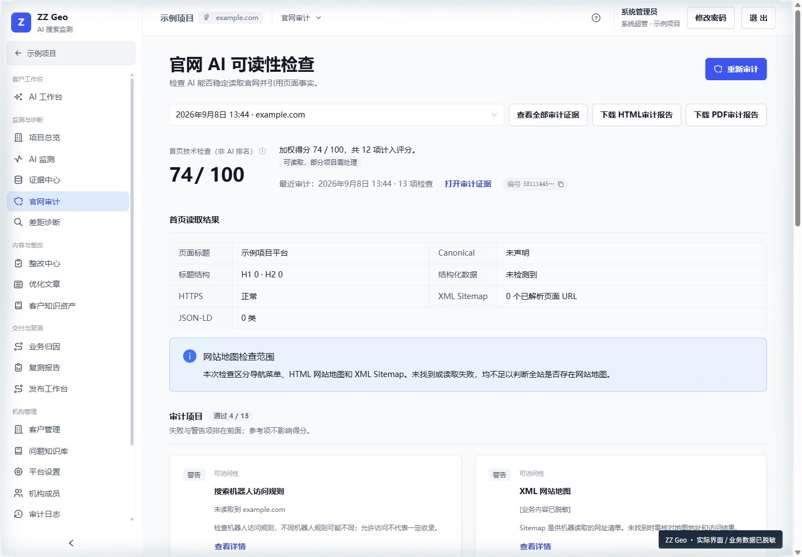
操作步骤
- 确认客户已填写可访问的官网。没有官网时先补充资料，或保留不适用状态。
- 查看已有审计，逐项展开定位、原因和改法；确需更新时再执行重新审计。
- 通过证据入口查看当次保存的源文件和截图，而不是用后来页面解释历史检查。
- 把需要处理的项目交给相应负责人，修改后按任务要求重新验收。
得到带位置和证据的技术检查与改进建议。
注意：官网技术分数不是 AI 排名。抓取失败表示证据不足，不能断言页面没有内容。
差距诊断
将已完成批次与官网证据整理成可整改的问题，避免仅凭总分决定动作。
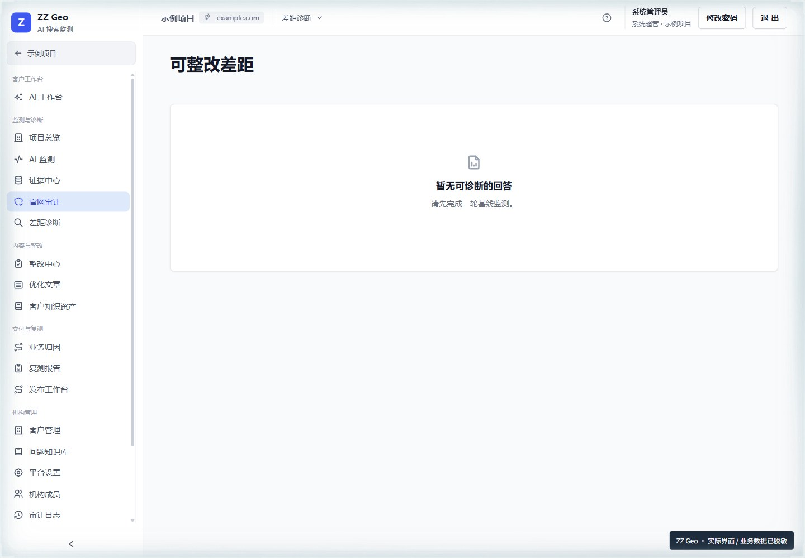
操作步骤
- 先完成一轮基线，选择需要诊断的批次。
- 阅读规则诊断结果，核对引用的回答和官网证据。
- 需要更深入分析时生成 Agent 草稿，逐条审核其依据、范围与建议。
- 将已认可的建议转为整改任务，并明确负责人和验收标准。
形成可以分配和验收的改进事项。
注意：没有可诊断回答时先完成采集；不要用演示数据或过往客户结果替代当前证据。
整改中心
集中跟进整改任务、执行情况与验收。任务完成、页面发布和效果改善是不同状态。
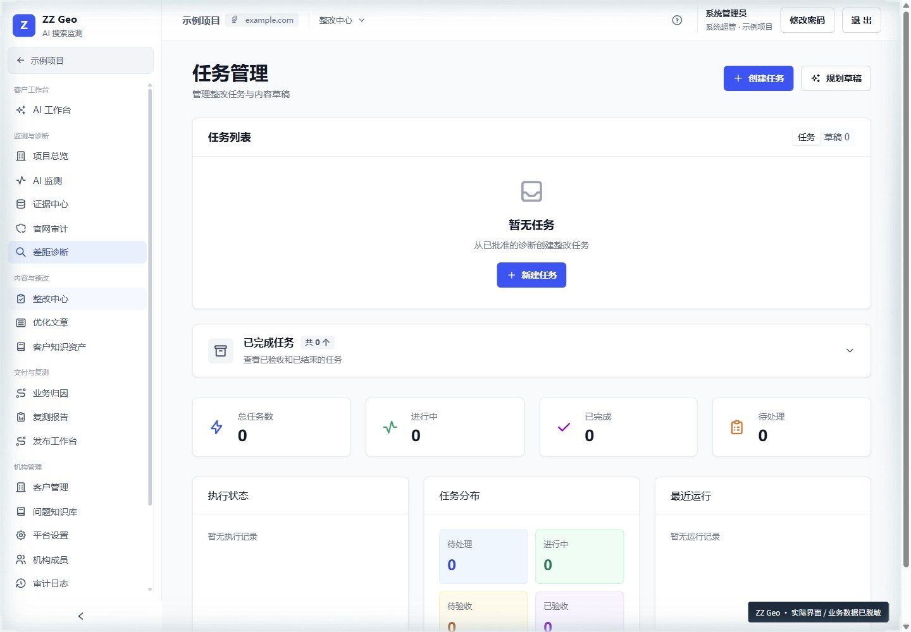
操作步骤
- 查看任务列表，按实际优先级安排负责人、目标和验收条件。
- 打开任务详情阅读证据与草稿，确认后再实施修改。
- 技术任务按要求重跑官网审计验收；内容任务填写真实发布地址并执行抓取验收。
- 完成验收后安排基线复测，观察符合比较条件的结果。
任务具有明确实施记录和验收依据。
注意：不能靠手工改状态跳过验收。网站整改的发布地址须满足项目官网域名约束。
客户知识资产
保存客户提供的产品、案例、事实与素材，使文章生成和质检有可核对的资料。
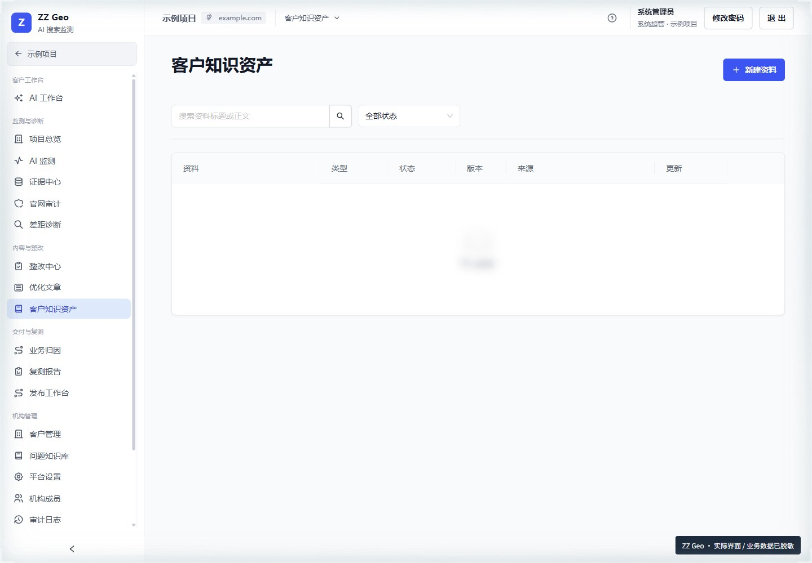
操作步骤
- 新建资料，填写标题、类型、内容与来源说明；必要时设置有效期。
- 提交后由有权限成员核对并批准，确认事实与归属。
- 资料变化时建立新修订并重新审核；过期资料及时更新或归档。
形成可追溯、经过批准的客户资料版本。
注意：客户资料不等于第三方独立证据。新质检仅使用当前批准且未过期的修订。
优化文章与审核质检
文章从已认可的建议和资料出发，先形成草稿，再经过内容审核与质量检查。
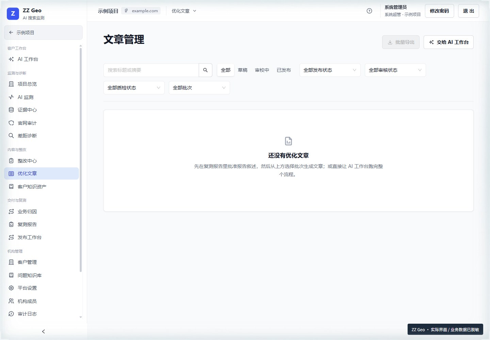
操作步骤
- 在文章管理中筛选标题、内容审核与质检状态；根据需要从 AI 工作台推进文章生成。
- 编辑正文和发布计划，核对引用、用途、读者和事实缺口。保存修改会形成新版本。
- 进入审核质检，查看分项问题、原文定位和依据。内容审核与质量审核分别处理。
- 修复阻断项后重新质检；版本变化后不要沿用旧版本的批准结论。
- 符合发布条件后进入发布工作台，也可以按权限导出 Markdown。
得到带版本和审核记录的可交付内容。
注意：草稿不是已发布文章。过期、异常或有阻断项的质检结果不能作为有效放行依据。
发布工作台与回执
记录人工发布的渠道、执行人、固定文章版本和交付回执。系统不会直接向外部平台发文。
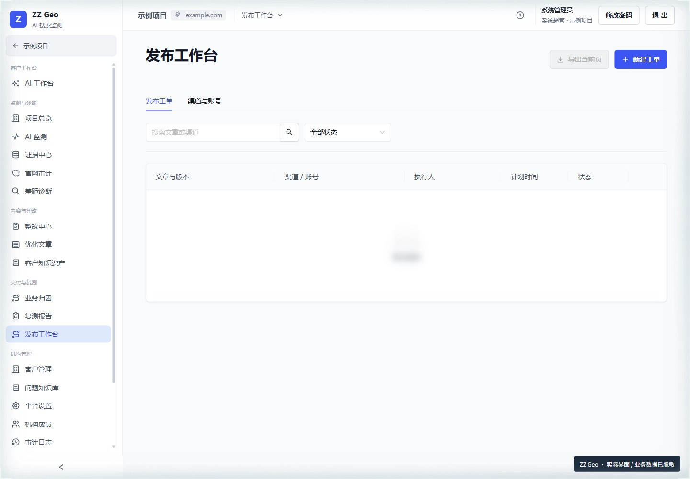
操作步骤
- 维护实际渠道和账号说明，不录入外部平台密码或 Cookie。
- 创建工单，选择已满足审核条件的文章、渠道、执行人和计划时间。
- 开始前再次核对工单固定的文章版本。由成员在对应平台人工完成发布。
- 提交真实发布地址和回执，由有权限成员复核。失败或结果不确定时保留实际状态。
每次交付可查文章版本、渠道、执行人和回执。
注意：旧版本回执只证明那次交付，不能让后来修改的文章自动变成已发布，也不能证明 GEO 效果。
复测报告与文档交付
选择已完成批次，将范围、指标、建议和证据组织成可阅读、可核对的交付物。
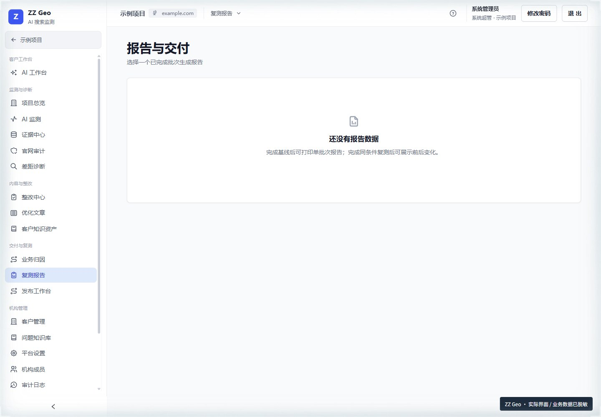
操作步骤
- 选择报告批次，检查采集与解析状态，确认使用的指标版本。
- 按报告工作流完成叙述、质检和人工审批；证据或版本变化时按提示更新。
- 冻结报告快照，再生成 PDF 与 Word。文档任务排队或失败时查看具体状态。
- 分享前核对报告内容与授权范围；按需创建、撤销或管理分享链接。
取得绑定冻结快照的在线报告与导出文档。
注意：单批次报告与配对复测报告不同。无共同问题或不满足比较条件时，不把差值解释成优化效果。
业务归因与数据对照
导入客户自有业务数据，与 AI 监测变化并列观察，保留来源和统计含义。
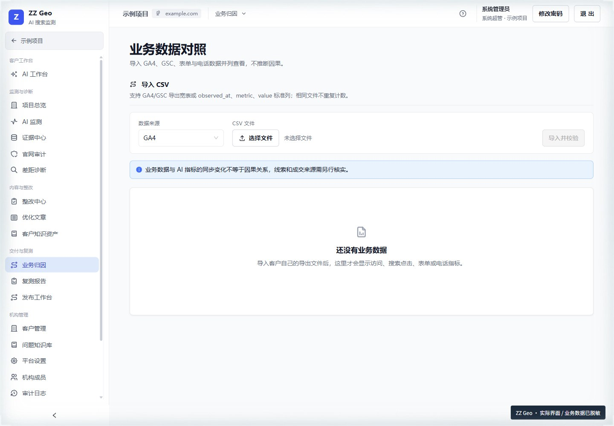
操作步骤
- 准备受支持的 CSV，确认来源、指标名称、日期与数值。
- 选择文件并导入校验，遇到字段错误时修正原文件后重试。
- 按来源和指标查看汇总，核对日期粒度，不把不同口径直接相加比较。
业务记录与监测结果能够在同一项目下对照。
注意：访问、线索和成交不会凭空生成。同步变化只是相关现象，不能单独推断由 GEO 优化导致。
问题知识库
沉淀可复用的问题研究素材，为不同客户建立监测范围提供候选。
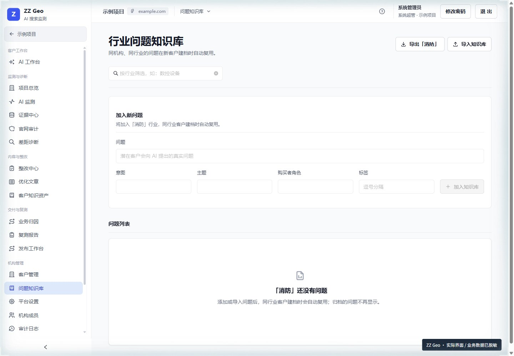
操作步骤
- 按行业或主题查找候选问题，检查问法与实际业务是否匹配。
- 把合适候选加入当前范围，人工修改并确认，不直接套用行业默认答案。
- 通过导入导出迁移知识库；导入后先核对再保存。
研究成果可复用，客户正式问题仍由成员确认。
注意：知识库候选不是采集证据，不会自动替换冻结批次里的问题。
机构成员
按岗位分配角色和客户范围，让成员只处理自己负责的数据。
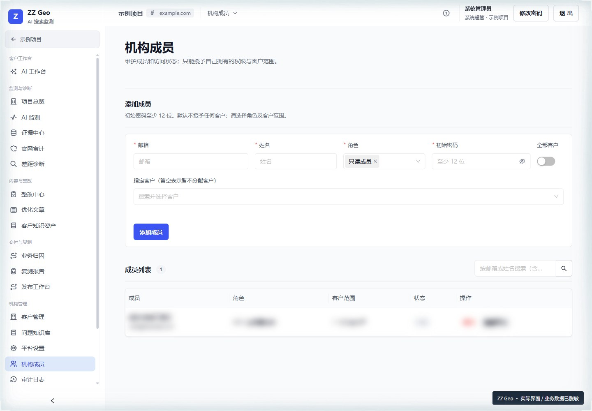
操作步骤
- 由有权限的管理员添加成员并分配可授予的角色。
- 确认成员能访问的客户范围，使用实际账号检查必要页面。
- 人员离职或职责变化时及时停用或调整权限；账号恢复与密码操作按系统流程执行。
成员角色、客户范围和账号状态清晰。
注意：管理员也受机构权限上限约束，不能利用成员管理间接提升自己的权限。
角色与授权
分别管理机构权限上限、角色能力和用户客户范围。菜单可见性只是授权的一个结果。
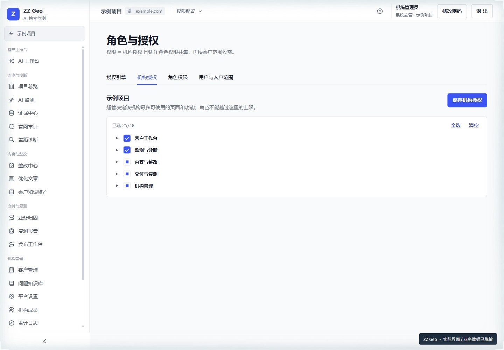
操作步骤
- 先确认当前机构可用的功能上限。
- 维护角色所需页面与操作权限，遵循最小必要范围。
- 再将角色与客户范围分配给用户，保存后用对应账号核对。
访问规则与实际职责一致。
注意：缺少页面先检查有效权限，不按角色名称猜测权限，也不要绕过服务端授权。
审计日志
查阅成员操作与业务变更记录，帮助核对何时、由谁执行了什么动作。
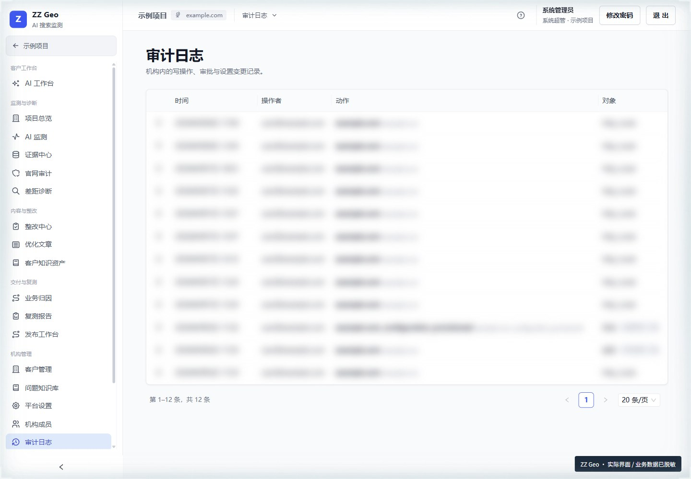
操作步骤
- 按时间与对象定位相关操作。
- 结合项目、任务或文章版本核对记录。
- 发现异常时保存必要的脱敏信息并联系管理员处理。
关键变更有可追溯的操作记录。
注意：审计日志不是原始回答证据，不应据此改写采集或报告快照。
运行日志
按服务、时间和级别定位运行问题，与具体任务状态相互核对。
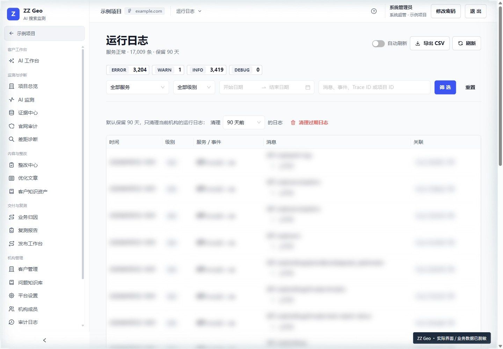
操作步骤
- 筛选相关时间和服务，优先查看失败任务附近的错误记录。
- 用 Trace 或任务标识关联上下文，区分配置、额度、网络和供应商错误。
- 修复原因后按业务页面提供的重试方式处理，不直接修改数据库任务状态。
得到可用于排障的错误范围与上下文。
注意：日志可能包含敏感业务信息，反馈前先脱敏；清理日志属于运维操作，不等于删除证据。
多租户管理
系统管理员维护机构状态与授权范围，普通成员只在所属机构内工作。
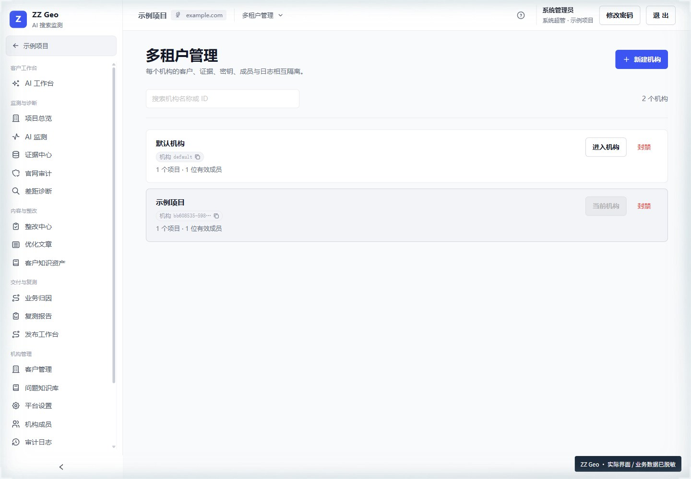
操作步骤
- 新建或选择机构，确认名称和状态。
- 按机构分配功能上限，再由机构管理员管理成员和客户。
- 切换或停用机构前确认影响范围，不混用其他机构的供应商凭据。
机构、成员、客户与凭据按边界隔离。
注意：系统管理页面只向有对应权限的账号开放。截图中业务内容已脱敏。